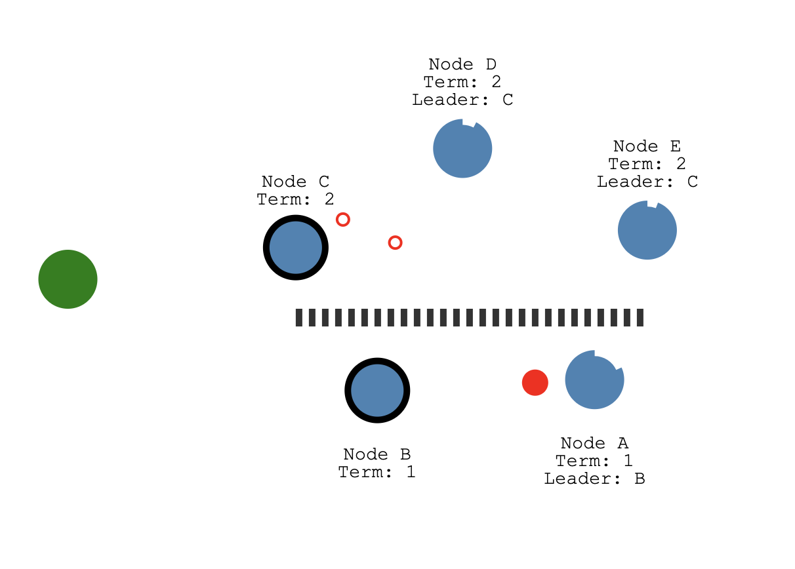
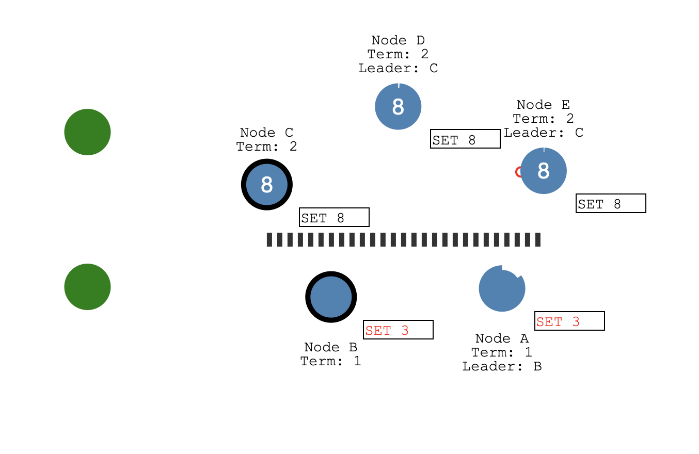
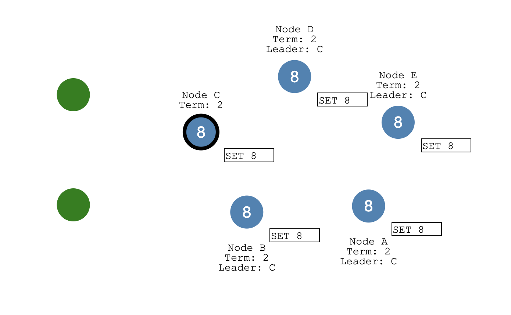

精解计算机系统课程
MIT 分布式系统（四）构建 Raft 库 #
上一章我们解读了 Raft 论文的核心内容，现在要用代码实现它了。本项目 raft_cpp 使用 C++17 实现了完整的 Raft 共识算法库，代码位于 raft_cpp/src/raft.cpp 和 raft_cpp/include/raft/raft.h。本章将结合这些代码，详细讲解 Raft 的工程实现。
核心数据结构设计
首先需要抽象出 Raft 节点的数据结构。对照论文 Figure 2 中的持久状态和易失状态，我们在 raft.h 中定义了 Raft 类，核心成员如下：
class Raft : public std::enable_shared_from_this<Raft> {
private:
mutable std::mutex mu_; // 保护以下所有共享状态
std::vector<std::shared_ptr<RaftPeer>> peers_; // 对端节点抽象
std::shared_ptr<Persister> persister_; // 持久化层
int me_ = 0; // 当前节点 id
std::atomic<bool> dead_{false}; // 节点存活状态
std::shared_ptr<BlockingQueue<ApplyMsg>> applyCh_; // apply 通道
std::condition_variable_any applyCond_; // 唤醒 applier 线程
// 每个 peer 一个独立的 replicator 锁和条件变量
std::vector<std::unique_ptr<std::mutex>> replicatorMu_;
std::vector<std::unique_ptr<std::condition_variable>> replicatorCv_;
NodeState state_ = NodeState::Follower;
// ── 持久状态（论文 Figure 2 Persistent state）──
int currentTerm_ = 0; // 当前任期号
int votedFor_ = -1; // 为谁投票（-1 表示未投票）
std::vector<Entry> logs_; // 日志序列，logs_[0] 是哨兵条目
// ── 易失状态（论文 Figure 2 Volatile state）──
int commitIndex_ = 0; // 已提交的最大日志索引
int lastApplied_ = 0; // 已 apply 到状态机的最大日志索引
std::vector<int> nextIndex_; // 到每个 peer 下一批发送的日志索引
std::vector<int> matchIndex_; // 到每个 peer 已匹配的日志索引
// ── 超时截止时间 ──
std::chrono::steady_clock::time_point electionDeadline_;
std::chrono::steady_clock::time_point heartbeatDeadline_;
// ── 后台线程 ──
std::thread tickerThread_;
std::thread applierThread_;
std::vector<std::thread> replicatorThreads_;
};
对比论文定义，currentTerm_、votedFor_、logs_ 是持久状态，节点重启后需要恢复；commitIndex_、lastApplied_ 是所有节点共享的易失状态；nextIndex_、matchIndex_ 是 Leader 独有的易失状态。日志序列 logs_ 的第 0 个元素是哨兵条目（dummy entry），它的 index 和 term 记录了快照的基准点。
节点状态在 types.h 中用枚举类定义：
enum class NodeState : uint8_t {
Follower = 0,
Candidate = 1,
Leader = 2
};
系统启动时通过 Raft::Make() 工厂方法构造 Raft 实例，它初始化所有变量、恢复持久状态、并启动三类后台线程：ticker（驱动选举超时）、applier（将已提交日志推送到应用层）、replicator（每个 peer 一个，负责日志复制和心跳）。
线程模型
Go 版本的 Raft 使用 goroutine 实现并发，C++ 版本则使用 std::thread。核心线程模型如下：
1. ticker 线程：以 10ms 为间隔轮询，检查选举超时是否到期。如果到期且当前不是 Leader，就发起一轮新的选举。
void Raft::ticker() {
while (!killed()) {
std::this_thread::sleep_for(std::chrono::milliseconds(10));
std::unique_lock<std::mutex> lk(mu_);
auto now = std::chrono::steady_clock::now();
// 选举超时检测
if (electionDeadline_ != std::chrono::steady_clock::time_point{} &&
now >= electionDeadline_) {
changeState(NodeState::Candidate);
currentTerm_ += 1;
StartElection();
electionDeadline_ = now + RandomizedElectionTimeout();
}
// 心跳由 replicator 线程的 wait_for 超时机制处理
}
}
2. applier 线程：等待 commitIndex_ 前进，将已提交的日志条目打包成 ApplyMsg 推送到 applyCh_ 通道通知应用层。
void Raft::applier() {
while (!killed()) {
std::vector<Entry> toApply;
int appliedUpTo = 0;
{
std::unique_lock<std::mutex> lk(mu_);
// 阻塞等待 commitIndex 前进
applyCond_.wait(lk, [&] {
return lastApplied_ < commitIndex_ || killed();
});
if (killed()) break;
if (lastApplied_ >= commitIndex_) continue;
int firstIndex = getFirstLog().index;
int ci = commitIndex_;
for (int i = lastApplied_ + 1; i <= ci; ++i) {
toApply.push_back(logs_[i - firstIndex]);
}
appliedUpTo = ci;
}
// 在锁外推送，避免阻塞
for (const auto& entry : toApply) {
ApplyMsg msg;
msg.command_valid = true;
msg.command = entry.command;
msg.command_term = entry.term;
msg.command_index = entry.index;
applyCh_->push(std::move(msg));
}
{
std::lock_guard<std::mutex> lk(mu_);
lastApplied_ = std::max(lastApplied_, appliedUpTo);
}
}
}
3. replicator 线程（每个 peer 一个）：使用 wait_for 在 100ms 超时或被唤醒时执行一轮复制。这同时实现了心跳机制——当没有新日志需要复制时，超时触发会发送空的 AppendEntries 心跳。
void Raft::replicator(int peer) {
while (!killed()) {
{
std::unique_lock<std::mutex> lk(*replicatorMu_[peer]);
// 超时唤醒 = 心跳；条件满足唤醒 = 有新日志要复制
replicatorCv_[peer]->wait_for(lk, std::chrono::milliseconds(100), [&] {
std::lock_guard<std::mutex> rlk(mu_);
return needReplicating(peer) || killed();
});
if (killed()) break;
}
bool isLeader = false;
{
std::lock_guard<std::mutex> rlk(mu_);
isLeader = (state_ == NodeState::Leader);
}
if (isLeader && !killed()) {
replicateOneRound(peer);
}
}
}
当应用层调用 Start() 提交提案时，会在本地追加日志，然后调用 BroadcastHeartbeat() 唤醒所有 replicator 线程开始复制。复制成功半数以上节点后触发 commit，applyCond_.notify_all() 唤醒 applier 线程将日志推送到应用层。整个流程通过条件变量实现了线程间的高效同步。
RaftPeer 抽象接口
节点之间需要互相通信。我们定义了 RaftPeer 抽象接口（raft_peer.h），它包含三个 RPC 方法：
class RaftPeer {
public:
virtual ~RaftPeer() = default;
virtual bool RequestVote(const RequestVoteRequest& args,
RequestVoteResponse& reply) = 0;
virtual bool AppendEntries(const AppendEntriesRequest& args,
AppendEntriesResponse& reply) = 0;
virtual bool InstallSnapshot(const InstallSnapshotRequest& args,
InstallSnapshotResponse& reply) = 0;
};
在测试环境中，InMemPeer（定义在 config.h）通过 weak_ptr 直接调用目标 Raft 实例的方法，模拟内存网络，还支持 setEnabled() 来模拟网络断连。在生产环境中，GrpcClient 实现了这个接口，通过 gRPC 进行跨节点通信。这种抽象设计使得同一套 Raft 核心代码可以无缝在测试和生产环境中运行。
RPC 消息定义
RPC 消息结构定义在 types.h 中，与论文保持一致。同时，proto/raft.proto 提供了 gRPC 传输层的服务定义。
日志条目 Entry：每条日志包含索引号、任期号和操作数据。
struct Entry {
int index = 0;
int term = 0;
std::vector<uint8_t> command; // 序列化后的操作数据
};
RequestVote 请求/响应：请求中携带候选人的任期号、id 以及最后一条日志的索引和任期，用于判断候选人日志是否足够新。
struct RequestVoteRequest {
int term; // 候选人的任期号
int candidate_id; // 候选人 id
int last_log_index; // 候选人最后一条日志的索引
int last_log_term; // 候选人最后一条日志的任期
};
struct RequestVoteResponse {
int term; // 投票节点的当前任期（用于候选人更新自己的任期）
bool vote_granted; // 是否投票
};
AppendEntries 请求/响应：请求中携带 Leader 的任期、id、前一条日志的索引和任期（用于一致性检查）、Leader 的 commit 号以及要同步的日志条目。响应中增加了 conflict_index 和 conflict_term 用于快速回退优化。
struct AppendEntriesRequest {
int term; // Leader 的任期号
int leader_id; // Leader 的 id
int prev_log_index; // 紧接新日志前一条的索引
int prev_log_term; // 该条目的任期
int leader_commit; // Leader 的 commit 号
std::vector<Entry> entries; // 要同步的日志条目
};
struct AppendEntriesResponse {
int term; // 响应节点的当前任期
bool success; // 是否追加成功
int conflict_index; // 冲突日志索引（快速回退优化）
int conflict_term; // 冲突日志任期
};
InstallSnapshot 请求/响应：当 Follower 落后太多（需要的日志已被快照截断）时，Leader 发送快照数据。
struct InstallSnapshotRequest {
int term; // Leader 的任期号
int leader_id; // Leader 的 id
int last_included_index; // 快照最后一条日志的索引
int last_included_term; // 快照最后一条日志的任期
std::vector<uint8_t> data; // 状态机序列化数据
};
struct InstallSnapshotResponse {
int term; // 响应节点的当前任期
};
对应的 gRPC 服务定义在 raft.proto 中，将上述结构映射为 protobuf 消息，方便跨节点网络传输。
Leader 选举实现分析
Raft 使用两个超时时间控制选举流程：选举超时（election timeout）和心跳超时（heartbeat timeout）。在 util.h 中，选举超时设置为 1000ms ~ 2000ms 之间的随机值，心跳超时固定为 125ms。
constexpr int kHeartbeatTimeoutMs = 125;
constexpr int kElectionTimeoutMs = 1000;
inline std::chrono::milliseconds RandomizedElectionTimeout() {
thread_local std::mt19937 rng(
std::random_device{}() ^
static_cast<unsigned>(std::chrono::steady_clock::now()
.time_since_epoch().count()));
std::uniform_int_distribution<int> dist(0, kElectionTimeoutMs - 1);
return std::chrono::milliseconds(kElectionTimeoutMs + dist(rng));
}
随机化的选举超时确保集群中大概率只有一个节点率先超时发起选举，避免多节点同时竞选导致选票分裂。
选举流程：当 ticker 线程检测到选举超时到期，节点切换为 Candidate 状态，增加任期号，调用 StartElection()：
void Raft::StartElection() {
auto request = genRequestVoteRequest();
auto grantedVotes = std::make_shared<std::atomic<int>>(1); // 自己一票
votedFor_ = me_;
persist();
auto self = shared_from_this();
for (size_t peer = 0; peer < peers_.size(); ++peer) {
if (static_cast<int>(peer) == me_) continue;
// 为每个 peer 启动一个 detached 线程发送 RequestVote
std::thread([self, request, peer, grantedVotes]() {
RequestVoteResponse response;
bool ok = false;
self->sendRequestVote(peer, request, response, ok);
if (!ok) return;
std::lock_guard<std::mutex> lk(self->mu_);
if (self->currentTerm_ == request.term &&
self->state_ == NodeState::Candidate) {
if (response.vote_granted) {
int votes = grantedVotes->fetch_add(1) + 1;
if (votes > static_cast<int>(self->peers_.size()) / 2) {
self->changeState(NodeState::Leader);
self->BroadcastHeartbeat(true);
}
} else if (response.term > self->currentTerm_) {
self->changeState(NodeState::Follower);
self->currentTerm_ = response.term;
self->votedFor_ = -1;
self->persist();
}
}
}).detach();
}
}
这里使用 shared_ptr<atomic<int>> 统计票数，因为多个 detached 线程会并发修改它。当票数超过半数时，切换为 Leader 并广播心跳。如果收到更高任期的响应，则回退为 Follower。
处理投票请求：收到 RequestVote 的节点在 HandleRequestVote() 中决定是否投票：
void Raft::HandleRequestVote(const RequestVoteRequest& req, RequestVoteResponse& resp) {
std::lock_guard<std::mutex> lk(mu_);
// 拒绝过期任期的投票请求
if (req.term < currentTerm_ ||
(req.term == currentTerm_ && votedFor_ != -1 && votedFor_ != req.candidate_id)) {
resp.term = currentTerm_;
resp.vote_granted = false;
return;
}
// 发现更高任期，更新自己并变为 Follower
if (req.term > currentTerm_) {
changeState(NodeState::Follower);
currentTerm_ = req.term;
votedFor_ = -1;
}
// 检查候选人日志是否至少和本地一样新
if (!isLogUpToDate(req.last_log_term, req.last_log_index)) {
resp.term = currentTerm_;
resp.vote_granted = false;
return;
}
// 投票并重置选举超时
votedFor_ = req.candidate_id;
electionDeadline_ = std::chrono::steady_clock::now() + RandomizedElectionTimeout();
resp.term = currentTerm_;
resp.vote_granted = true;
}
isLogUpToDate() 比较候选人最后一条日志的任期和索引，只有候选人的日志至少和本地一样新才会投票。投票后重置选举超时，防止该节点在等待期间又发起选举。
当 Leader 选出后，changeState(NodeState::Leader) 会初始化 nextIndex_ 和 matchIndex_，并设置心跳超时。之后 Leader 通过 replicator 线程持续发送心跳，Follower 每次收到 AppendEntries（含心跳）都会重置选举超时，只要 Leader 正常运行就不会触发新的选举。
日志复制实现分析
选举完成后，Leader 开始处理客户端请求。应用层调用 Start() 提交提案：
Raft::StartResult Raft::Start(const std::vector<uint8_t>& command) {
std::lock_guard<std::mutex> lk(mu_);
if (state_ != NodeState::Leader) {
return {-1, -1, false};
}
auto newLog = appendNewEntry(command); // 追加日志到本地
BroadcastHeartbeat(false); // 唤醒 replicator 线程
return {newLog.index, newLog.term, true};
}
appendNewEntry() 构造新的 Entry（index = 上一条 +1，term = 当前任期），追加到 logs_ 末尾，更新自己的 matchIndex_，并持久化状态。然后 BroadcastHeartbeat() 通过 notify_one() 唤醒每个 peer 的 replicator 线程。
replicator 线程被唤醒后执行 replicateOneRound()，将日志打包成 AppendEntriesRequest 发送给 Follower：
bool Raft::replicateOneRound(int peer) {
bool useSnapshot = false;
AppendEntriesRequest aeReq;
InstallSnapshotRequest snapReq;
{
std::lock_guard<std::mutex> lk(mu_);
if (state_ != NodeState::Leader) return false;
int prevLogIndex = nextIndex_[peer] - 1;
useSnapshot = (prevLogIndex < getFirstLog().index);
if (useSnapshot) {
snapReq = genInstallSnapshotRequest();
} else {
aeReq = genAppendEntriesRequest(prevLogIndex);
}
}
// 在锁外发送 RPC，避免长时间持锁
if (useSnapshot) {
InstallSnapshotResponse resp;
bool ok = false;
sendInstallSnapshot(peer, snapReq, resp, ok);
if (ok) {
std::lock_guard<std::mutex> lk(mu_);
handleInstallSnapshotResponse(peer, snapReq, resp);
}
return ok;
} else {
AppendEntriesResponse resp;
bool ok = false;
sendAppendEntries(peer, aeReq, resp, ok);
if (ok) {
std::lock_guard<std::mutex> lk(mu_);
handleAppendEntriesResponse(peer, aeReq, resp);
}
return ok;
}
}
注意这里采用了"单次加锁准备请求、锁外发送 RPC、再次加锁处理响应"的模式，避免在 RPC 等待期间持锁导致死锁或性能下降。
Follower 处理 AppendEntries：核心是一致性检查——验证 prev_log_index 处的日志任期是否匹配：
void Raft::HandleAppendEntries(const AppendEntriesRequest& req, AppendEntriesResponse& resp) {
std::lock_guard<std::mutex> lk(mu_);
if (req.term < currentTerm_) {
resp.term = currentTerm_;
resp.success = false;
return;
}
if (req.term > currentTerm_) {
currentTerm_ = req.term;
votedFor_ = -1;
}
changeState(NodeState::Follower);
electionDeadline_ = std::chrono::steady_clock::now() + RandomizedElectionTimeout();
// prev_log_index 已被快照截断
if (req.prev_log_index < getFirstLog().index) {
resp.success = false;
return;
}
// 一致性检查：prev_log_index 处的任期是否匹配
if (!matchLog(req.prev_log_term, req.prev_log_index)) {
resp.term = currentTerm_;
resp.success = false;
// 快速回退优化：计算冲突位置
int lastIndex = getLastLog().index;
if (lastIndex < req.prev_log_index) {
resp.conflict_term = -1;
resp.conflict_index = lastIndex + 1;
} else {
int firstIndex = getFirstLog().index;
resp.conflict_term = logs_[req.prev_log_index - firstIndex].term;
int idx = req.prev_log_index - 1;
while (idx >= firstIndex && logs_[idx - firstIndex].term == resp.conflict_term) {
--idx;
}
resp.conflict_index = idx;
}
return;
}
// 追加日志（覆盖冲突条目）
int firstIndex = getFirstLog().index;
for (size_t i = 0; i < req.entries.size(); ++i) {
const auto& entry = req.entries[i];
if (entry.index - firstIndex >= static_cast<int>(logs_.size()) ||
logs_[entry.index - firstIndex].term != entry.term) {
logs_.resize(entry.index - firstIndex);
for (size_t j = i; j < req.entries.size(); ++j) {
logs_.push_back(req.entries[j]);
}
break;
}
}
advanceCommitIndexForFollower(req.leader_commit);
resp.term = currentTerm_;
resp.success = true;
}
Leader 处理 AppendEntries 响应：成功时更新 matchIndex_ 和 nextIndex_，并推进 commitIndex；失败时根据冲突信息快速回退 nextIndex_：
void Raft::handleAppendEntriesResponse(int peer, const AppendEntriesRequest& req,
const AppendEntriesResponse& resp) {
if (state_ != NodeState::Leader || currentTerm_ != req.term) return;
if (resp.success) {
matchIndex_[peer] = req.prev_log_index + static_cast<int>(req.entries.size());
nextIndex_[peer] = matchIndex_[peer] + 1;
advanceCommitIndexForLeader();
} else {
if (resp.term > currentTerm_) {
changeState(NodeState::Follower);
currentTerm_ = resp.term;
votedFor_ = -1;
persist();
} else if (resp.term == currentTerm_) {
// 快速回退：直接跳到冲突位置
nextIndex_[peer] = resp.conflict_index;
if (resp.conflict_term != -1) {
int firstIndex = getFirstLog().index;
for (int i = req.prev_log_index; i >= firstIndex; --i) {
if (logs_[i - firstIndex].term == resp.conflict_term) {
nextIndex_[peer] = i + 1;
break;
}
}
}
}
}
}
推进 commitIndex：Leader 将 matchIndex_ 降序排列，取第 N/2+1 个位置的值作为新的 commitIndex 候选（即多数派确认的日志索引），但只提交当前任期的日志（论文的安全约束）：
void Raft::advanceCommitIndexForLeader() {
int n = static_cast<int>(matchIndex_.size());
std::vector<int> srt(matchIndex_);
insertion_sort_desc(srt); // 降序排列
int newCommitIndex = srt[n - (n / 2 + 1)];
if (newCommitIndex > commitIndex_) {
// 只提交当前任期的日志（Raft 论文 Figure 8 安全性）
if (matchLog(currentTerm_, newCommitIndex)) {
commitIndex_ = newCommitIndex;
applyCond_.notify_all(); // 唤醒 applier 线程
}
}
}
commitIndex 推进后，applier 线程被唤醒，将新提交的日志打包成 ApplyMsg 推送到 applyCh_，应用层从中取出消息应用到状态机并响应客户端。
Raft 快照实现分析
随着客户端操作不断写入，日志量会持续增长。日志过大会导致：访问日志耗时增加、节点重启恢复缓慢、落后的 Follower 需要追加大量的日志。Raft 论文第 7 章介绍了日志压缩方案——快照（Snapshot）。

快照的核心思想是：将已提交的日志应用到状态机后，把状态机的当前状态序列化保存下来，然后安全地删除这些已快照的日志条目。这样日志量不会无限增长。
打快照：应用层负责决定何时打快照。在 KV 系统中，当 Raft 状态大小超过阈值 maxRaftState 时，应用层调用 Snapshot()：
void Raft::Snapshot(int index, const std::vector<uint8_t>& snapshot) {
std::lock_guard<std::mutex> lk(mu_);
int snapshotIndex = getFirstLog().index;
if (index <= snapshotIndex) return; // 已经有更靠后的快照了
// 截断 index 之前的所有日志，保留第一条作为新的哨兵
logs_ = std::vector<Entry>(logs_.begin() + (index - snapshotIndex),
logs_.end());
logs_[0].command.clear(); // 哨兵条目不含操作数据
persister_->SaveStateAndSnapshot(encodeState(), snapshot);
}
截断后，logs_[0] 成为新的哨兵条目，它的 index 和 term 记录了快照基准点。状态数据和 Raft 状态一起原子性地持久化到磁盘。
发送快照：当 Leader 发现某个 Follower 的 nextIndex_ 已落后到快照基准之前时（即 prevLogIndex < getFirstLog().index），无法通过 AppendEntries 追赶，改为发送 InstallSnapshot RPC：
InstallSnapshotRequest Raft::genInstallSnapshotRequest() const {
return {currentTerm_, me_,
getFirstLog().index, getFirstLog().term,
persister_->ReadSnapshot()};
}
Follower 安装快照：HandleInstallSnapshot() 接收快照数据，如果快照比自己已提交的日志更新，就将快照通过 applyCh_ 推送给应用层，由应用层调用 CondInstallSnapshot() 安装：
void Raft::HandleInstallSnapshot(const InstallSnapshotRequest& req,
InstallSnapshotResponse& resp) {
std::lock_guard<std::mutex> lk(mu_);
resp.term = currentTerm_;
if (req.term < currentTerm_) return;
if (req.term > currentTerm_) {
currentTerm_ = req.term;
votedFor_ = -1;
persist();
}
changeState(NodeState::Follower);
electionDeadline_ = std::chrono::steady_clock::now() + RandomizedElectionTimeout();
if (req.last_included_index <= commitIndex_) return;
// 将快照推送到 applyCh_，应用层负责安装
ApplyMsg msg;
msg.snapshot_valid = true;
msg.snapshot = req.data;
msg.snapshot_term = req.last_included_term;
msg.snapshot_index = req.last_included_index;
applyCh_->push(std::move(msg));
}
CondInstallSnapshot() 由应用层在 apply 线程中调用，它截断快照点之前的日志，更新 commitIndex_ 和 lastApplied_，并将快照数据和 Raft 状态一起持久化。
持久化实现
Raft 的持久状态（currentTerm_、votedFor_、logs_）必须在节点崩溃后能恢复。Persister 类（persister.h）封装了持久化逻辑，使用自定义二进制格式序列化状态，并写入磁盘文件。
void Raft::persist() {
persister_->SaveRaftState(encodeState());
}
std::vector<uint8_t> Raft::encodeState() const {
std::vector<uint8_t> buf;
ser::writeInt(buf, currentTerm_);
ser::writeInt(buf, votedFor_);
ser::writeInt(buf, static_cast<int>(logs_.size()));
for (const auto& e : logs_) {
ser::writeInt(buf, e.index);
ser::writeInt(buf, e.term);
ser::writeBytes(buf, e.command);
}
return buf;
}
Persister 支持两种保存方式：SaveRaftState() 只保存 Raft 状态，SaveStateAndSnapshot() 同时保存 Raft 状态和快照数据，确保两者原子性写入。节点重启时，Raft::Make() 调用 readPersist() 从持久化数据恢复状态。如果存在快照，还会将其推送到 applyCh_，让应用层恢复状态机。
Raft 如何应对脑裂
在第三章中，我们介绍了脑裂的场景：网络分区导致集群节点被划分为不同分区，如果处理不当，不同分区可能选出各自的 Leader 并提交不同的操作，导致数据不一致。

Raft 通过多数派票决来解决这个问题。以五节点集群为例，分区后 C、D、E 三个节点构成多数派分区，可以选出 Leader 并提交日志；而 A、B 两个节点构成少数派分区，无法达到多数派，因此无法提交日志。

代码层面，关键的防护在于：每次收到 RPC 请求或响应时，都会检查任期号。如果发现更高任期，立即回退为 Follower。这体现在 HandleRequestVote()、HandleAppendEntries() 和 handleAppendEntriesResponse() 中：
// 在 handleAppendEntriesResponse 中
if (resp.term > currentTerm_) {
changeState(NodeState::Follower);
currentTerm_ = resp.term;
votedFor_ = -1;
persist();
}

当网络恢复后，少数派分区中的 Leader（A 或 B）收到来自多数派分区 Leader（C）的更高任期心跳，会立即变为 Follower，并丢弃之前未提交的冲突日志，从新 Leader 同步正确的日志。这样整个系统最终恢复一致状态。同时，advanceCommitIndexForLeader() 中的"只提交当前任期日志"约束（论文 Figure 8 安全性）确保了 Leader 不会错误地提交之前任期中尚未确认的日志条目，避免了计数错误。
至此，我们完整分析了 Raft 库的核心实现：数据结构设计、线程模型、RPC 通信、Leader 选举、日志复制、快照压缩、持久化和脑裂应对。下一章，我们将基于这个 Raft 库构建一个高可用的分布式 KV 存储系统。
捐赠
整理这本书耗费了我们大量的时间和精力。如果你觉得有帮助，一瓶矿泉水的价格支持我们继续输出优质的分布式存储知识体系，2.99¥，感谢大家的支持。

遵循MIT协议开源。
感谢 「赫蹏」 提供如此优秀的中文排版系统